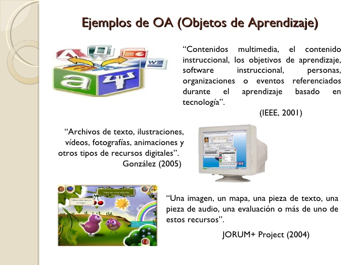

Un Objeto de Aprendizaje es un conjunto de recursos digitales, autocontenible y reutilizable, con un propósito educativo y constituido por al menos tres componentes internos: contenidos, actividades de aprendizaje y elementos de contextualización.
Los Objetos de Aprendizaje ofrecen una nueva conceptualización del proceso de enseñanza aprendizaje, posibilitando una unidad de aprendizaje pequeña, auto-contenida y reutilizable.
